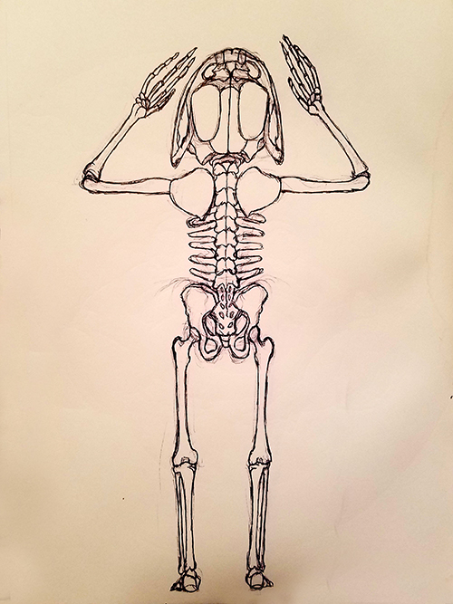

Toadstool by G.D. Goya
Chapter 1: The Toad

No matter how many times Steve had taken the stuff, it had always surprised him. Whether by needle, nose, or pipe, the effect was the same: euphoria. It was as if the drug had returned him to the wild. No longer were the needs for material things, and worldly pleasures. Steve only felt the need to consume, and consume he did.
By the third week, he began to sweat heavily. Juice ran thick from his pores and ran down his skin like molasses. It hung on him like a layer of skin, giving off the same wretched smell of sewage as the stuff itself. The smell would cling to him like a shadow, invading the airways of any place that was graced by his morbid presence. Steve would do what he could to obtain his scourge, in the form of that little, powdered-drug, but when he couldn’t, the sweat would suffice. He would scrape goops of it off his skin into little bowls and jars, and collected the nauseous broth only to be consumed later in some form or another. His favorite method was jarring it, and letting it bake in the sun. The gases released after the lid was cracked were immaculate. Steve would stick his face in, and huff at the jars until their effects dwindled and his insatiable hunger returned. They could never starve off the desire. The would jars only prolong his periods without the drug itself, and afterwards he would return to the streets.
However long it took for his family to become concerned, it was far too late. By then, Steve was oblivious with the world around him, and people had become obstacles to his newfound habit. When his parents visited and saw his unkempt apartment complete with heaps of rubbish, grime, and rotting jars, the sight had been all too familiar. Addiction. No stranger to their son. The next step seemed simple, intervention, rehab, and recovery. Wash, rinse, and repeat. They had done it all too many times.
Except they did not expect their son to return to the apartment, drooling from the mouth, with a fat, ugly toad in hand. Steve’s mother shrieked when she saw the state of her son; clothes soiled through, thin as a rail, and with great, bulging pupils stretched over the lovely blue eyes that he once had. The mother tried to gather her baby, but there was no stopping Steve from proudly bearing the Toad to his parents, then carrying it to the sink, where he took a mallet and crushed the thing. His eyes lit up as the mushy interior tore through its skin and splattered about. He began mashing the bits together, all while occasionally glancing back at his horrified parents and exclaiming, “I found one. I finally found one!”
Steve’s father hugged the despairing mother, and tried his best to shelter her from such an appalling sight. He watched in horror as his poor Steven finished mashing the toad, then brought a straw to his scabbed mouth, and began slurping it up. The awful sound of flesh being sucked through the straw was only drowned out by the sound of sweet, exalted pleasure coming from the son himself. After a large belch, Steve finished his concoction, turned to his parents with a bloody, ragged smile, then collapsed to the floor in a state of bliss. So much for a surprise visit. His mother laid the cookies she had brought for her son on the counter, and sank her knees. His father stood motionless, until the urge to vomit stirred him to run to the bathroom where he added material to the already rank toilet bowl filled with needles and maggots. Flies swarmed about him, yet he could only find the energy to brush the tears from his face. Steven may have more than just a drug problem.
Somewhere, some place in the city, a toad croaked.
- G.D. Goya (2017)